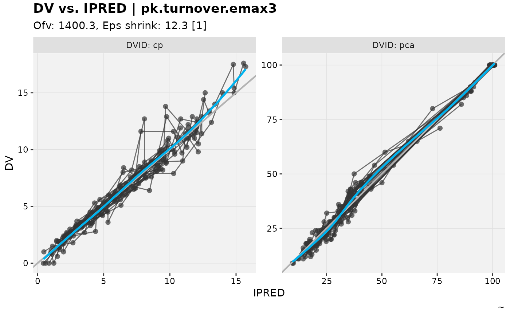
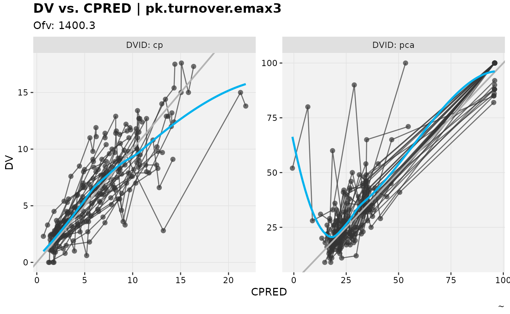
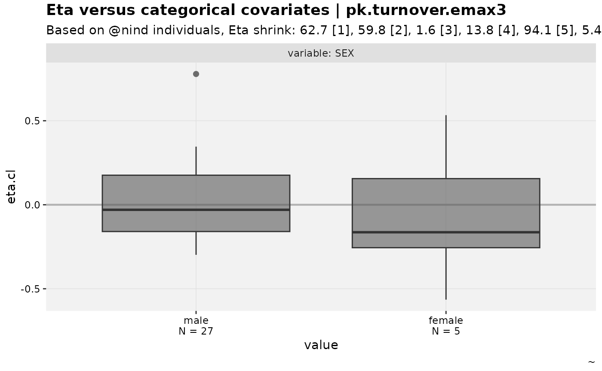
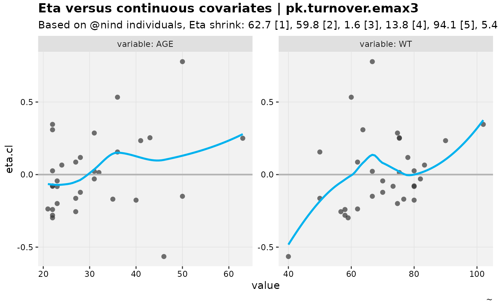
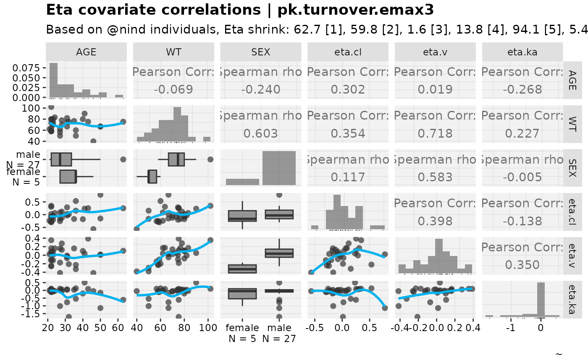
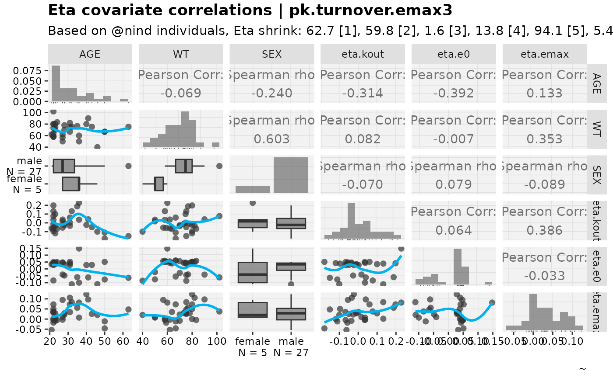
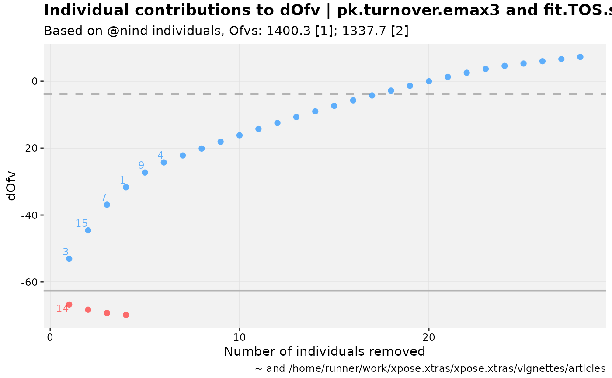
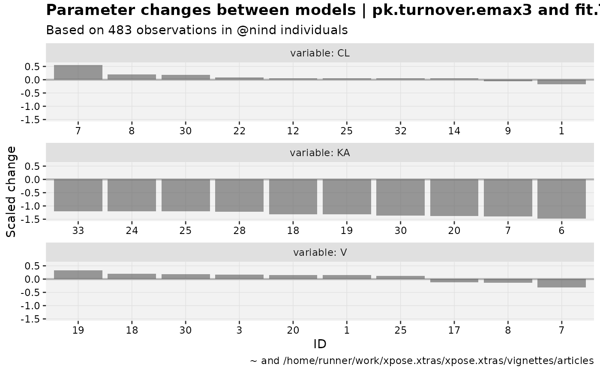
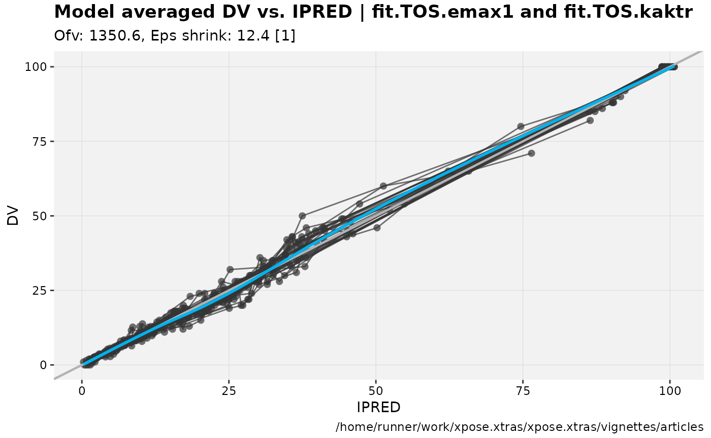

nlmixr2 fits are fully supported in the current release,
including many convenience functions to ensure consumed
nlmixr2 results are fully compatible with all available
features of xpose and xpose.xtras.
Basics
While the xpose.xtras package already contains a few
nlmixr2 examples, let’s start fresh with a new fit. The
model and dataset were based on in the
nlmixr2 documentation; to start using the resulting
xpose_data directly, refer to
nlmixr2_warfarin.
pk.turnover.emax3 <- function() {
ini({
tktr <- log(1)
tka <- log(1)
tcl <- log(0.1)
tv <- log(10)
##
eta.ktr ~ 1
eta.ka ~ 1
eta.cl ~ 2
eta.v ~ 1
prop.err <- 0.1
pkadd.err <- 0.1
##
temax <- logit(0.8)
tec50 <- log(0.5)
tkout <- log(0.05)
te0 <- log(100)
##
eta.emax ~ .5
eta.ec50 ~ .5
eta.kout ~ .5
eta.e0 ~ .5
##
pdadd.err <- 10
})
model({
ktr <- exp(tktr + eta.ktr)
ka <- exp(tka + eta.ka)
cl <- exp(tcl + eta.cl)
v <- exp(tv + eta.v)
emax = expit(temax+eta.emax)
ec50 = exp(tec50 + eta.ec50)
kout = exp(tkout + eta.kout)
e0 = exp(te0 + eta.e0)
##
DCP = center/v
PD=1-emax*DCP/(ec50+DCP)
##
effect(0) = e0
kin = e0*kout
##
d/dt(depot) = -ktr * depot
d/dt(gut) = ktr * depot -ka * gut
d/dt(center) = ka * gut - cl / v * center
d/dt(effect) = kin*PD -kout*effect
##
cp = center / v
cp ~ prop(prop.err) + add(pkadd.err)
effect ~ add(pdadd.err) | pca
})
}
fit.TOS <- nlmixr2(pk.turnover.emax3, warfarin, "focei", control=list(print=0),
table=list(cwres=TRUE, npde=TRUE))
#> [====|====|====|====|====|====|====|====|====|====] 0:00:00
#> [====|====|====|====|====|====|====|====|====|====] 0:00:00
#> [====|====|====|====|====|====|====|====|====|====] 0:00:00
#> [====|====|====|====|====|====|====|====|====|====] 0:00:00
#> [====|====|====|====|====|====|====|====|====|====] 0:00:00
#> [====|====|====|====|====|====|====|====|====|====] 0:00:00
#>
#> [====|====|====|====|====|====|====|====|====|====] 0:00:00
#>
#> [====|====|====|====|====|====|====|====|====|====] 0:00:00
#> [====|====|====|====|====|====|====|====|====|====] 0:00:00
#> [====|====|====|====|====|====|====|====|====|====] 0:00:00
#> [====|====|====|====|====|====|====|====|====|====] 0:00:00
#> [====|====|====|====|====|====|====|====|====|====] 0:00:00
#> calculating covariance matrix
#> [====|====|====|====|====|====|====|====|====|====] 0:01:12
#> doneNow that we have a fit, we have a few options to consume the results
into xpose. We could use
[xpose_data_nlmixr2()][xpose.nlmixr2::xpose_data_nlmixr2]
and then convert to an xp_xtras object from there.
xpose.nlmixr2::xpose_data_nlmixr2(fit.TOS) %>%
as_xp_xtras()
#>
#> ── ~ xp_xtras object
#> Model description: not implemented
#> fit.TOS overview:
#> - Software: nlmixr2 4.1.0
#> - Attached files (memory usage 553.8 Kb):
#> + obs tabs: $prob no.1: nlmixr2
#> + sim tabs: <none>
#> + output files: <none>
#> + special: <none>
#> + fit: <none>
#> - gg_theme: :: xpose theme_readable
#> - xp_theme: xp_xtra_theme new_x$xp_theme
#> - Options: dir = NULL, quiet = TRUE, manual_import = NULL, cvtype = exactIt is helpful though, for traceability and for some convenience
functions for the fit object to be attached to the
xpose_data object.
xpose.nlmixr2::xpose_data_nlmixr2(fit.TOS) %>%
as_xp_xtras() %>%
attach_nlmixr2(fit.TOS)
#>
#> ── ~ xp_xtras object
#> Model description: not implemented
#> fit.TOS overview:
#> - Software: nlmixr2 4.1.0
#> - Attached files (memory usage 725.7 Kb):
#> + obs tabs: $prob no.1: nlmixr2
#> + sim tabs: <none>
#> + output files: <none>
#> + special: <none>
#> + fit: attached as (this)$fit
#> - gg_theme: :: xpose theme_readable
#> - xp_theme: xp_xtra_theme new_x$xp_theme
#> - Options: dir = NULL, quiet = TRUE, manual_import = NULL, cvtype = exactOne such convenience function is to backfill some of the missing properties improperly pulled from the fit results (at time of writing, these are condition number and significant digits). That’s not these backfills are opinionated, hence it is optional.
xpose.nlmixr2::xpose_data_nlmixr2(fit.TOS) %>%
as_xp_xtras() %>%
attach_nlmixr2(fit.TOS) %>%
backfill_nlmixr2_props() %>%
{print(get_prop(., "condn")); .} %>%
get_prop("nsig")
#> [1] "32318.0467755017"
#> [1] "3"A more useful application of the attached fit result is a functional
application of get_prm. Note,
xpose::prm_table() does not work despite this new feature
because it uses the original get_prm() defined within
xpose namespace.
try({
xpose.nlmixr2::xpose_data_nlmixr2(fit.TOS) %>%
as_xp_xtras() %>% get_prm()
})
#> Error in get_prm(.) : No `nlmixr2` fit object found.
#> Caused by error in `rlang::exec()`:
#> ! Assertion on 'FALSE' failed: Must be TRUE.
xpose.nlmixr2::xpose_data_nlmixr2(fit.TOS) %>%
as_xp_xtras() %>%
attach_nlmixr2(fit.TOS) %>%
get_prm()
#> # A tibble: 20 × 12
#> type name label value se rse fixed diagonal m n cv
#> * <chr> <chr> <chr> <num:> <num:3> <num:3> <lgl> <lgl> <int> <int> <num>
#> 1 the tktr "" 0.104 2.20 21.1 FALSE NA 1 NA NA
#> 2 the tka "" 0.302 2.18 7.23 FALSE NA 2 NA NA
#> 3 the tcl "" -2.04 0.109 0.0536 FALSE NA 3 NA NA
#> 4 the tv "" 2.06 0.0916 0.0444 FALSE NA 4 NA NA
#> 5 the prop.err "" 0.148 NA NA FALSE NA 5 NA NA
#> 6 the pkadd.e… "" 0.172 NA NA FALSE NA 6 NA NA
#> 7 the temax "" 4.75 6.20 1.30 FALSE NA 7 NA NA
#> 8 the tec50 "" 0.157 0.229 1.46 FALSE NA 8 NA NA
#> 9 the tkout "" -2.93 0.128 0.0436 FALSE NA 9 NA NA
#> 10 the te0 "" 4.57 0.0399 0.00874 FALSE NA 10 NA NA
#> 11 the pdadd.e… "" 3.76 NA NA FALSE NA 11 NA NA
#> 12 ome eta.ktr "eta… 0.840 NA NA FALSE TRUE 1 1 101.
#> 13 ome eta.ka "eta… 0.944 NA NA FALSE TRUE 2 2 120.
#> 14 ome eta.cl "eta… 0.268 NA NA FALSE TRUE 3 3 27.3
#> 15 ome eta.v "eta… 0.221 NA NA FALSE TRUE 4 4 22.4
#> 16 ome eta.emax "eta… 0.590 NA NA FALSE TRUE 5 5 64.5
#> 17 ome eta.ec50 "eta… 0.453 NA NA FALSE TRUE 6 6 47.7
#> 18 ome eta.kout "eta… 0.153 NA NA FALSE TRUE 7 7 15.4
#> 19 ome eta.e0 "eta… 0.103 NA NA FALSE TRUE 8 8 10.3
#> 20 sig sigma(1… "err" 1 NA NA TRUE TRUE 1 1 NA
#> # ℹ 1 more variable: shk <num:3>To build on this, because nlmixr2 coerces users to use
mu-referencing and captures parameter associations automatically,
another useful backfill includes mapping these parameter associations
via add_prm_association(), by way of
nlmixr2_prm_associations(). In this model,
temax is logit transformed, so to keep assumptions valid in
the CV% calculation it needs to be back-transformed (as indicated in the
cli message).
xpose.nlmixr2::xpose_data_nlmixr2(fit.TOS) %>%
as_xp_xtras() %>%
attach_nlmixr2(fit.TOS) %>%
nlmixr2_prm_associations() %>%
mutate_prm(temax ~ plogis) %>%
get_prm()
#> # A tibble: 20 × 12
#> type name label value se rse fixed diagonal m n cv
#> * <chr> <chr> <chr> <num:> <num:3> <num:3> <lgl> <lgl> <int> <int> <num:3>
#> 1 the tktr "" 0.104 2.20 21.1 FALSE NA 1 NA NA
#> 2 the tka "" 0.302 2.18 7.23 FALSE NA 2 NA NA
#> 3 the tcl "" -2.04 0.109 0.0536 FALSE NA 3 NA NA
#> 4 the tv "" 2.06 0.0916 0.0444 FALSE NA 4 NA NA
#> 5 the prop.… "" 0.148 NA NA FALSE NA 5 NA NA
#> 6 the pkadd… "" 0.172 NA NA FALSE NA 6 NA NA
#> 7 the temax "" 0.991 0.362 0.365 FALSE NA 7 NA NA
#> 8 the tec50 "" 0.157 0.229 1.46 FALSE NA 8 NA NA
#> 9 the tkout "" -2.93 0.128 0.0436 FALSE NA 9 NA NA
#> 10 the te0 "" 4.57 0.0399 0.00874 FALSE NA 10 NA NA
#> 11 the pdadd… "" 3.76 NA NA FALSE NA 11 NA NA
#> 12 ome eta.k… "eta… 0.840 NA NA FALSE TRUE 1 1 101.
#> 13 ome eta.ka "eta… 0.944 NA NA FALSE TRUE 2 2 120.
#> 14 ome eta.cl "eta… 0.268 NA NA FALSE TRUE 3 3 27.3
#> 15 ome eta.v "eta… 0.221 NA NA FALSE TRUE 4 4 22.4
#> 16 ome eta.e… "eta… 0.590 NA NA FALSE TRUE 5 5 0.647
#> 17 ome eta.e… "eta… 0.453 NA NA FALSE TRUE 6 6 47.7
#> 18 ome eta.k… "eta… 0.153 NA NA FALSE TRUE 7 7 15.4
#> 19 ome eta.e0 "eta… 0.103 NA NA FALSE TRUE 8 8 10.3
#> 20 sig sigma… "err" 1 NA NA TRUE TRUE 1 1 NA
#> # ℹ 1 more variable: shk <num:3>
#> # Parameter table includes the following associations: ~log(eta.ktr),
#> ~log(eta.ka), ~log(eta.cl), ~log(eta.v), ~logit(eta.emax), ~log(eta.ec50),
#> ~log(eta.kout), and ~log(eta.e0)That’s a lot of boilerplate to pipe through, so a convenience
function has been developed to cover all of that. Note the parameter
associations are mapped automatically, but we could skip that if we
weren’t planning to use get_prm() at all by setting
.skip_assoc=TRUE.
nlmixr2_warfarin <- nlmixr2_as_xtra(fit.TOS)General Usage
We covered most of the usage unique to this package in the Basics
section, but this section is to illustrate all of the basic functions
will continue to work. At time of writing, some missing properties are
present and should be added with pending PR to
xpose.nlmixr2 (these are not backfill candidates since they
don’t exist in the summary element, violating how
set_prop() was designed to work).
list_vars(nlmixr2_warfarin)
#> List of available variables for problem no. 1
#> - Subject identifier (id) : ID
#> - Dependent variable (dv) : DV
#> - Independent variable (idv) : TIME
#> - DV identifier (dvid) : DVID [0]
#> - Dose amount (amt) : AMT
#> - Event identifier (evid) : EVID
#> - Model typical predictions (pred) : CPRED
#> - Model individual predictions (ipred) : IPRED
#> - Model parameter (param) : KA, CL, V
#> - Eta (eta) : eta.ktr, eta.ka, eta.cl, eta.v, eta.emax, eta.ec50, eta.kout, eta.e0
#> - Residuals (res) : NPDE, RES, WRES, IRES, IWRES, CRES, CWRES
#> - Categorical covariates (catcov) : SEX [0]
#> - Continuous covariates (contcov) : WT, AGE
#> - Not attributed (na) : NLMIXRLLIKOBS, CMT, EPRED, ERES, NPD, PDE, PD, PRED, ETA.KTR, ETA.KA, ETA.CL, ETA.V, ETA.EMAX, ETA.EC50, ETA.KOUT, ETA.E0, DEPOT, GUT, CENTER, EFFECT, KTR, EMAX, EC50, KOUT, E0, DCP, PD.1, KIN, TAD, DOSENUM
dv_vs_ipred(nlmixr2_warfarin, facet="DVID")
#> Using data from $prob no.1
#> Filtering data by EVID == 0
#> `geom_smooth()` using formula = 'y ~ x'
#> `geom_smooth()` using formula = 'y ~ x'
dv_vs_pred(nlmixr2_warfarin, facet="DVID")
#> Using data from $prob no.1
#> Filtering data by EVID == 0
#> `geom_smooth()` using formula = 'y ~ x'`geom_smooth()` using formula = 'y ~ x'
eta_vs_catcov(nlmixr2_warfarin, etavar = eta.cl)
#> Using data from $prob no.1
#> Removing duplicated rows based on: ID
#> Tidying data by ID, TIME, AMT, DV, DVID ... and 53 more variables
#> Warning: nind is not part of the available keywords. Check ?template_titles for
#> a full list.
eta_vs_contcov(nlmixr2_warfarin, etavar = eta.cl)
#> Using data from $prob no.1
#> Removing duplicated rows based on: ID
#> Tidying data by ID, TIME, AMT, DV, DVID ... and 52 more variables
#> Warning: nind is not part of the available keywords. Check ?template_titles for
#> a full list.
#> `geom_smooth()` using formula = 'y ~ x'
#> `geom_smooth()` using formula = 'y ~ x'
eta_vs_cov_grid(nlmixr2_warfarin, etavar = c(eta.cl,eta.v,eta.ka))
#> Using data from $prob no.1
#> Removing duplicated rows based on: ID
#> Warning: nind is not part of the available keywords. Check ?template_titles for
#> a full list.
#> Using data from $prob no.1
#> Removing duplicated rows based on: ID
#> Using data from $prob no.1
#> Removing duplicated rows based on: ID
#> Using data from $prob no.1
#> Removing duplicated rows based on: ID
#> Using data from $prob no.1
#> Removing duplicated rows based on: ID
#> Using data from $prob no.1
#> Removing duplicated rows based on: ID
#> Using data from $prob no.1
#> Removing duplicated rows based on: ID
#> Using data from $prob no.1
#> Removing duplicated rows based on: ID
#> Using data from $prob no.1
#> Removing duplicated rows based on: ID
#> Using data from $prob no.1
#> Removing duplicated rows based on: ID
#> Using data from $prob no.1
#> Removing duplicated rows based on: ID
#> Using data from $prob no.1
#> Removing duplicated rows based on: ID
#> Using data from $prob no.1
#> Removing duplicated rows based on: ID
#> Using data from $prob no.1
#> Removing duplicated rows based on: ID
#> Using data from $prob no.1
#> Removing duplicated rows based on: ID
#> Using data from $prob no.1
#> Removing duplicated rows based on: ID
#> Using data from $prob no.1
#> Removing duplicated rows based on: ID
#> Using data from $prob no.1
#> Removing duplicated rows based on: ID
#> Using data from $prob no.1
#> Removing duplicated rows based on: ID
#> Using data from $prob no.1
#> Removing duplicated rows based on: ID
#> Using data from $prob no.1
#> Removing duplicated rows based on: ID
eta_vs_cov_grid(nlmixr2_warfarin, etavar = c(eta.kout,eta.e0,eta.emax))
#> Using data from $prob no.1
#> Removing duplicated rows based on: ID
#> Warning: nind is not part of the available keywords. Check ?template_titles for
#> a full list.
#> Using data from $prob no.1
#> Removing duplicated rows based on: ID
#> Using data from $prob no.1
#> Removing duplicated rows based on: ID
#> Using data from $prob no.1
#> Removing duplicated rows based on: ID
#> Using data from $prob no.1
#> Removing duplicated rows based on: ID
#> Using data from $prob no.1
#> Removing duplicated rows based on: ID
#> Using data from $prob no.1
#> Removing duplicated rows based on: ID
#> Using data from $prob no.1
#> Removing duplicated rows based on: ID
#> Using data from $prob no.1
#> Removing duplicated rows based on: ID
#> Using data from $prob no.1
#> Removing duplicated rows based on: ID
#> Using data from $prob no.1
#> Removing duplicated rows based on: ID
#> Using data from $prob no.1
#> Removing duplicated rows based on: ID
#> Using data from $prob no.1
#> Removing duplicated rows based on: ID
#> Using data from $prob no.1
#> Removing duplicated rows based on: ID
#> Using data from $prob no.1
#> Removing duplicated rows based on: ID
#> Using data from $prob no.1
#> Removing duplicated rows based on: ID
#> Using data from $prob no.1
#> Removing duplicated rows based on: ID
#> Using data from $prob no.1
#> Removing duplicated rows based on: ID
#> Using data from $prob no.1
#> Removing duplicated rows based on: ID
#> Using data from $prob no.1
#> Removing duplicated rows based on: ID
#> Using data from $prob no.1
#> Removing duplicated rows based on: ID
Sets
A simple change to the warfarin PK model is to use the same
parameters for ka and ktr. In the PD model, we
could also fix emax to one (and drop the interindividual
variability). An analyst would explore these separately and then maybe
combine them.
fit.TOS.kaktr <- fit.TOS %>%
model({
ka <- ktr
}) %>%
nlmixr2(warfarin, "focei",
control = list(print = 0),
table = list(cwres = TRUE, npde = TRUE)
)
#> [====|====|====|====|====|====|====|====|====|====] 0:00:00
#> [====|====|====|====|====|====|====|====|====|====] 0:00:00
#> [====|====|====|====|====|====|====|====|====|====] 0:00:00
#> [====|====|====|====|====|====|====|====|====|====] 0:00:00
#> [====|====|====|====|====|====|====|====|====|====] 0:00:00
#> [====|====|====|====|====|====|====|====|====|====] 0:00:00
#>
#> [====|====|====|====|====|====|====|====|====|====] 0:00:00
#>
#> [====|====|====|====|====|====|====|====|====|====] 0:00:00
#> [====|====|====|====|====|====|====|====|====|====] 0:00:00
#> [====|====|====|====|====|====|====|====|====|====] 0:00:00
#> [====|====|====|====|====|====|====|====|====|====] 0:00:00
#> [====|====|====|====|====|====|====|====|====|====] 0:00:00
#> calculating covariance matrix
#> [====|====|====|====|====|====|====|====|====|====] 0:00:43
#> done
fit.TOS.emax1 <- fit.TOS %>%
model({
emax = 1
}) %>%
nlmixr2(warfarin, "focei",
control = list(print = 0),
table = list(cwres = TRUE, npde = TRUE)
)
#> [====|====|====|====|====|====|====|====|====|====] 0:00:00
#> [====|====|====|====|====|====|====|====|====|====] 0:00:00
#> [====|====|====|====|====|====|====|====|====|====] 0:00:00
#> [====|====|====|====|====|====|====|====|====|====] 0:00:00
#> [====|====|====|====|====|====|====|====|====|====] 0:00:00
#> [====|====|====|====|====|====|====|====|====|====] 0:00:00
#>
#> [====|====|====|====|====|====|====|====|====|====] 0:00:00
#>
#> [====|====|====|====|====|====|====|====|====|====] 0:00:00
#> [====|====|====|====|====|====|====|====|====|====] 0:00:00
#> [====|====|====|====|====|====|====|====|====|====] 0:00:00
#> [====|====|====|====|====|====|====|====|====|====] 0:00:00
#> [====|====|====|====|====|====|====|====|====|====] 0:00:00
#> calculating covariance matrix
#> [====|====|====|====|====|====|====|====|====|====] 0:00:46
#> done
fit.TOS.simple <- fit.TOS %>%
model({
ka <- ktr
emax = 1
}) %>%
nlmixr2(warfarin, "focei",
control = list(print = 0),
table = list(cwres = TRUE, npde = TRUE)
)
#> [====|====|====|====|====|====|====|====|====|====] 0:00:00
#> [====|====|====|====|====|====|====|====|====|====] 0:00:00
#> [====|====|====|====|====|====|====|====|====|====] 0:00:00
#> [====|====|====|====|====|====|====|====|====|====] 0:00:00
#> [====|====|====|====|====|====|====|====|====|====] 0:00:00
#> [====|====|====|====|====|====|====|====|====|====] 0:00:00
#>
#> [====|====|====|====|====|====|====|====|====|====] 0:00:00
#>
#> [====|====|====|====|====|====|====|====|====|====] 0:00:00
#> [====|====|====|====|====|====|====|====|====|====] 0:00:00
#> [====|====|====|====|====|====|====|====|====|====] 0:00:00
#> [====|====|====|====|====|====|====|====|====|====] 0:00:00
#> [====|====|====|====|====|====|====|====|====|====] 0:00:00
#> calculating covariance matrix
#> [====|====|====|====|====|====|====|====|====|====] 0:00:28
#> doneThese explorations make up a set which can be examined with an
xpose_set:
# Since these models were created with piping, need to update their labels
warf_ka <- nlmixr2_as_xtra(fit.TOS.kaktr) %>%
set_prop(run="fit.TOS.kaktr")
warf_emax <- nlmixr2_as_xtra(fit.TOS.emax1) %>%
set_prop(run="fit.TOS.emax1")
warf_simple <- nlmixr2_as_xtra(fit.TOS.simple) %>%
set_prop(run="fit.TOS.simple")
warfarin_set <- xpose_set(
nlmixr2_warfarin, warf_ka, warf_emax, warf_simple,
.relationships = c(
warf_ka~nlmixr2_warfarin,
warf_emax~nlmixr2_warfarin,
warf_simple ~ warf_ka + warf_emax
)
) %>%
# Add iOFVs
focus_qapply(backfill_iofv)
warfarin_set
#>
#> ── xpose_set object ────────────────────────────────────────────────────────────
#> • Number of models: 4
#> • Model labels: nlmixr2_warfarin, warf_ka, warf_emax, and warf_simple
#> • Number of relationships: 4
#> • Focused xpdb objects: none
#> • Exposed properties: none
#> • Base model: none
warfarin_set %>%
expose_property(ofv) %>%
expose_property(condn) %>%
reshape_set()
#> # A tibble: 4 × 7
#> xpdb label parent base focus ..ofv ..condn
#> <named list> <chr> <named list> <lgl> <lgl> <dbl> <dbl>
#> 1 <xp_xtras> nlmixr2_warfarin <chr [1]> FALSE FALSE 1400. 3395179.
#> 2 <xp_xtras> warf_ka <chr [1]> FALSE FALSE 1338. 21266.
#> 3 <xp_xtras> warf_emax <chr [1]> FALSE FALSE 1351. 464.
#> 4 <xp_xtras> warf_simple <chr [2]> FALSE FALSE 1338. 269.
warfarin_set %>%
dofv_vs_id(nlmixr2_warfarin, warf_simple, .inorder = TRUE, df=1)
#> Using data from $prob no.1
#> Removing duplicated rows based on: ID
#> Warning: nind is not part of the available keywords. Check ?template_titles for
#> a full list.
warfarin_set %>%
prm_waterfall(nlmixr2_warfarin, warf_simple)
#> Using data from $prob no.1
#> Removing duplicated rows based on: ID
#> Tidying data by ID, TIME, AMT, DV, DVID ... and 55 more variables
#> Warning: nind is not part of the available keywords. Check ?template_titles for
#> a full list.
warfarin_set %>%
dv_vs_ipred_modavg(warf_emax, warf_ka)
#> `geom_smooth()` using formula = 'y ~ x'
#> `geom_smooth()` using formula = 'y ~ x'
Derived parameter explorations
The suggestion to have nlmixr2 installed enables
rxode2 utility functions to be leveraged for diagnostics
(and probably many other unrealized benefits, possibly using
nonmem2rx). One of those features is exploring the derived
parameters for a model.
Now any model (it does not have to be fit with nlmixr2)
can have derived parameters calculated and checked for signs of
misspecification. The derive_prm() family of functions can
be used to generate a table of derived parameters or to set derived
parameters as param type variables.
nlmixr2_m3 %>%
backfill_derived() %>%
list_vars()
#> Using data from $prob no.1
#> Removing duplicated rows based on: ID
#> List of available variables for problem no. 1
#> - Subject identifier (id) : ID
#> - Dependent variable (dv) : DV
#> - Independent variable (idv) : TIME
#> - Dose amount (amt) : AMT
#> - Event identifier (evid) : EVID
#> - Model typical predictions (pred) : CPRED
#> - Model individual predictions (ipred) : IPRED
#> - Model parameter (param) : KA, CL, V, VC, KEL, VSS, T12ALPHA, ALPHA, A, FRACA
#> - Eta (eta) : eta.ka, eta.cl, eta.v
#> - Residuals (res) : RES, WRES, IRES, IWRES, CRES, CWRES
#> - Continuous covariates (contcov) : WT
#> - Not attributed (na) : CMT, CENS, LLOQ, NLMIXRLLIKOBS, PRED, LOWERLIM, UPPERLIM, ETA.KA, ETA.CL, ETA.V, DEPOT, CENT, BLQLIKE, TAD, DOSENUM
derive_prm(nlmixr2_m3) %>%
dplyr::select(ID,KA,CL,VSS:(dplyr::last_col())) %>%
summary()
#> Using data from $prob no.1
#> Removing duplicated rows based on: ID
#> ID KA CL VSS T12ALPHA
#> 1 :1 Min. :0.7002 Min. :1.729 Min. :26.25 Min. : 6.094
#> 2 :1 1st Qu.:1.0031 1st Qu.:2.407 1st Qu.:28.64 1st Qu.: 6.699
#> 3 :1 Median :1.4240 Median :2.974 Median :31.39 Median : 7.408
#> 4 :1 Mean :1.8523 Mean :2.921 Mean :31.31 Mean : 7.751
#> 5 :1 3rd Qu.:1.9679 3rd Qu.:3.298 3rd Qu.:33.28 3rd Qu.: 7.836
#> 6 :1 Max. :5.7476 Max. :4.200 Max. :36.93 Max. :11.619
#> (Other):6
#> ALPHA A FRACA
#> Min. :0.05965 Min. :0.02708 Min. :1
#> 1st Qu.:0.08848 1st Qu.:0.03006 1st Qu.:1
#> Median :0.09359 Median :0.03186 Median :1
#> Mean :0.09221 Mean :0.03229 Mean :1
#> 3rd Qu.:0.10347 3rd Qu.:0.03493 3rd Qu.:1
#> Max. :0.11374 Max. :0.03809 Max. :1
#>
# If param has no vars, .prm should be set
pheno_base %>%
backfill_derived(
.prm = c(CL,V)
) %>%
list_vars()
#> Warning: There was 1 warning in `dplyr::mutate()`.
#> ℹ In argument: `type = stringr::str_replace(.$type, "\\d$", "")`.
#> Caused by warning:
#> ! Unknown or uninitialised column: `type`.
#> Using data from $prob no.1
#> Removing duplicated rows based on: ID
#> List of available variables for problem no. 1
#> - Subject identifier (id) : ID
#> - Dependent variable (dv) : DV
#> - Independent variable (idv) : TIME
#> - Dose amount (amt) : AMT
#> - Event identifier (evid) : EVID
#> - Missing dependent variable (mdv) : MDV
#> - Model typical predictions (pred) : PRED
#> - Model individual predictions (ipred) : IPRED
#> - Model parameter (param) : CL, V, VC, KEL, VSS, T12ALPHA, ALPHA, A, FRACA
#> - Eta (eta) : ETA1, ETA2
#> - Residuals (res) : IWRES, CWRES, NPDE, RES, WRES
#> - Categorical covariates (catcov) : APGR ('Apgar score') [10]
#> - Continuous covariates (contcov) : WT ('Weight', kg)
#> - Not attributed (na) : IRES, CRESThese derived parameters can be fed into
diagnose_constants() to perform some quick checks for
common issues.
nlmixr2_m3 %>%
backfill_derived() %>%
diagnose_constants(vol_pattern = "^V$")
#> Using data from $prob no.1
#> Removing duplicated rows based on: ID
#> Using data from $prob no.1
#> Removing duplicated rows based on: ID
#> ℹ Checking for absorption flip-flop (first-order absorption slower than derived rate constants)...
#> ✔ No parameter sets are suggestive of flip-flop.
#> ℹ Checking for negative microconstants or volume...
#> ✔ No parameter sets have negative microconstants or volumes.
nlmixr2_m3 %>%
backfill_derived() %>%
diagnose_constants(
vol_pattern = "^V$",
df_units = list(KA = "1/hr", ALPHA = "1/hr"),
checks = list(neg_microvol = FALSE)
)
#> Using data from $prob no.1
#> Removing duplicated rows based on: ID
#> Using data from $prob no.1
#> Removing duplicated rows based on: ID
#> ℹ Checking for absorption flip-flop (first-order absorption slower than derived rate constants)...
#> ✔ No parameter sets are suggestive of flip-flop.
#> ℹ Checking that compared units match...
#> ✔ All relevant units seem to match.
# Using df form
derive_prm(nlmixr2_m3) %>%
diagnose_constants(df = ., vol_pattern = "^V$")
#> Using data from $prob no.1
#> Removing duplicated rows based on: ID
#> ℹ Checking for absorption flip-flop (first-order absorption slower than derived rate constants)...
#> ✔ No parameter sets are suggestive of flip-flop.
#> ℹ Checking for negative microconstants or volume...
#> ✔ No parameter sets have negative microconstants or volumes.Session info
sessionInfo()
#> R version 4.5.1 (2025-06-13)
#> Platform: x86_64-pc-linux-gnu
#> Running under: Ubuntu 24.04.3 LTS
#>
#> Matrix products: default
#> BLAS: /usr/lib/x86_64-linux-gnu/openblas-pthread/libblas.so.3
#> LAPACK: /usr/lib/x86_64-linux-gnu/openblas-pthread/libopenblasp-r0.3.26.so; LAPACK version 3.12.0
#>
#> locale:
#> [1] LC_CTYPE=C.UTF-8 LC_NUMERIC=C LC_TIME=C.UTF-8
#> [4] LC_COLLATE=C.UTF-8 LC_MONETARY=C.UTF-8 LC_MESSAGES=C.UTF-8
#> [7] LC_PAPER=C.UTF-8 LC_NAME=C LC_ADDRESS=C
#> [10] LC_TELEPHONE=C LC_MEASUREMENT=C.UTF-8 LC_IDENTIFICATION=C
#>
#> time zone: UTC
#> tzcode source: system (glibc)
#>
#> attached base packages:
#> [1] stats graphics grDevices utils datasets methods base
#>
#> other attached packages:
#> [1] xpose.xtras_0.1.0 xpose.nlmixr2_0.4.1 xpose_0.4.20
#> [4] ggplot2_3.5.2 rxode2_4.1.0 nlmixr2plot_3.0.3
#> [7] nlmixr2extra_3.0.2 nlmixr2est_4.1.0 nlmixr2data_2.0.9
#> [10] lotri_1.0.2 nlmixr2_4.0.1
#>
#> loaded via a namespace (and not attached):
#> [1] tidyselect_1.2.1 dplyr_1.1.4 farver_2.1.2
#> [4] S7_0.2.0 fastmap_1.2.0 lazyeval_0.2.2
#> [7] GGally_2.4.0 tweenr_2.0.3 rex_1.2.1
#> [10] stringfish_0.17.0 digest_0.6.37 lifecycle_1.0.4
#> [13] magrittr_2.0.3 dparser_1.3.1-13 compiler_4.5.1
#> [16] rlang_1.1.6 sass_0.4.10 tools_4.5.1
#> [19] utf8_1.2.6 yaml_2.3.10 data.table_1.17.8
#> [22] symengine_0.2.10 knitr_1.50 lbfgsb3c_2024-3.5
#> [25] labeling_0.4.3 htmlwidgets_1.6.4 pmxcv_0.0.2
#> [28] RColorBrewer_1.1-3 withr_3.0.2 purrr_1.1.0
#> [31] sys_3.4.3 desc_1.4.3 grid_4.5.1
#> [34] polyclip_1.10-7 scales_1.4.0 MASS_7.3-65
#> [37] cli_3.6.5 rmarkdown_2.29 crayon_1.5.3
#> [40] ragg_1.5.0 generics_0.1.4 RcppParallel_5.1.11-1
#> [43] rstudioapi_0.17.1 tzdb_0.5.0 cachem_1.1.0
#> [46] ggforce_0.5.0 RApiSerialize_0.1.4 stringr_1.5.1
#> [49] splines_4.5.1 vctrs_0.6.5 Matrix_1.7-3
#> [52] jsonlite_2.0.0 PreciseSums_0.7 hms_1.1.3
#> [55] systemfonts_1.2.3 tidyr_1.3.1 jquerylib_0.1.4
#> [58] rxode2ll_2.0.13 glue_1.8.0 pkgdown_2.1.3
#> [61] ggstats_0.10.0 stringi_1.8.7 gtable_0.3.6
#> [64] tibble_3.3.0 pillar_1.11.0 htmltools_0.5.8.1
#> [67] R6_2.6.1 textshaping_1.0.3 conflicted_1.2.0
#> [70] evaluate_1.0.5 lattice_0.22-7 readr_2.1.5
#> [73] backports_1.5.0 vpc_1.2.2 qs_0.27.3
#> [76] memoise_2.0.1 n1qn1_6.0.1-12 bslib_0.9.0
#> [79] Rcpp_1.1.0 nlme_3.1-168 checkmate_2.3.3
#> [82] mgcv_1.9-3 xfun_0.53 fs_1.6.6
#> [85] forcats_1.0.0 pkgconfig_2.0.3